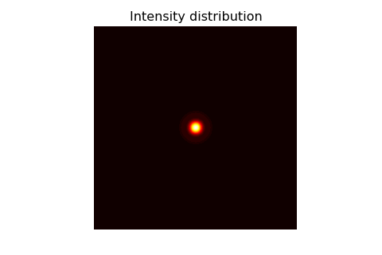

Computer Practicum 6: Fresnel diffraction, plane wavefront.¶
#!/usr/bin/env python
from matplotlib.backends.backend_tkagg import FigureCanvasTkAgg
import matplotlib.pyplot as plt
import sys
if sys.version_info[0] < 3:
from Tkinter import *
import Tkinter as Tk
else:
from tkinter import *
import tkinter as Tk
from LightPipes import *
root = Tk.Tk()
root.wm_title("Computer practicum: Fresnel plane wavefront")
root.wm_protocol("WM_DELETE_WINDOW", root.quit)
wavelength=530*nm;
size=5*mm;
N=200; N2=int(N/2)
z=20*cm
R=0.5*mm
fig=plt.figure(figsize=(6,4))
ax1 = fig.add_subplot(111)
canvas = FigureCanvasTkAgg(fig, master=root)
canvas._tkcanvas.pack(side=Tk.LEFT, fill=Tk.BOTH, expand=1)
v=StringVar()
def TheExample():
global F,z,R,wavelength,I
#print (root.winfo_pointerxy())
F=Begin(size,wavelength,N)
z=float(scale_z.get())*cm
R=float(scale_R.get())/2*mm
F=CircAperture(R,0,0,F)
FN=R*R/z/wavelength
if (FN >= 15.0):
F=Forvard(z,F)
else:
F=Fresnel(z,F)
I=Intensity(0,F)
ax1.clear()
ax1.contourf(I,50,cmap='hot'); ax1.axis('off'); ax1.axis('equal')
ax1.set_title('Intensity distribution')
canvas.show()
def motion(event):
x=event.xdata;y=event.ydata
if (x and y is not None and x>0 and x<N and y>0 and y<N):
v.set('x=%f, y=%f\n I=%f' %((-size/2+x*size/N)/mm,(-size/2+y*size/N)/mm,I[int(x)][int(y)]))
root.configure(cursor='crosshair')
else:
v.set('')
root.configure(cursor='arrow')
def _quit():
root.quit()
root.destroy()
frame1=Frame(root)
frame1.pack(side=Tk.BOTTOM)
frame2=Frame(frame1)
frame2.pack(side=Tk.BOTTOM)
frame3=Frame(frame2)
frame3.pack(side=Tk.BOTTOM)
scale_R = Tk.Scale(frame1,
orient='horizontal',
label = 'diameter aperture [mm]',
length = 200, from_=0.5, to=size/2/mm,
resolution = 0.001)
scale_R.pack(side = Tk.LEFT)
scale_R.set(R/mm)
scale_z = Tk.Scale( frame2,
orient='horizontal',
label = 'z [cm]',
length = 200,
from_=0.01, to=200.0,
resolution = 0.01)
scale_z.pack(side = Tk.LEFT)
scale_z.set(z/cm)
button_quit = Tk.Button(frame3,
width = 24,
text='Quit',
command=_quit)
button_quit.pack(side=Tk.LEFT, pady=10)
Label(root, textvariable=v).pack(side=Tk.LEFT)
cid = fig.canvas.mpl_connect('motion_notify_event', motion)
def task():
TheExample()
root.after(1, task)
root.after(1, task)
root.mainloop()
(Source code, png, hires.png, pdf)


{kind=link}
{kind=link}